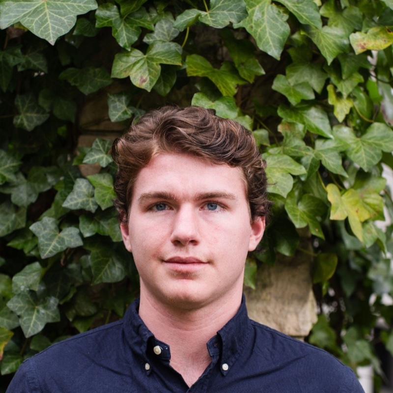
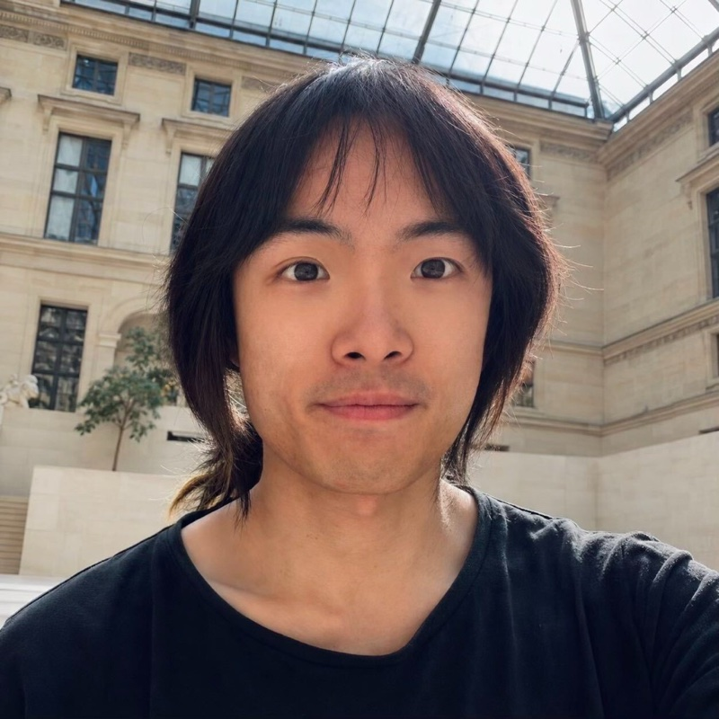

Our Team
This website is built and maintained at the University of Chicago Booth School of Business by people working on the theory and practice of data-driven decision-making in operations research, and is based on the project “AI in Mathematical Operations Research”; see the paper here.
-
Rad Niazadeh
Associate Professor of Operations Management
University of Chicago Booth School of Business
-
Pranav Nuti
Principal Researcher
University of Chicago Booth School of Business
-
Eric Fithian
Pre-doctoral Research Professional
University of Chicago Booth School of Business (Center for Applied AI)
-

Pete Westbrook
Research Assistant
Stanford University & Citadel
-

Jiechen Zhang
PhD Candidate
École Polytechnique Fédérale de Lausanne